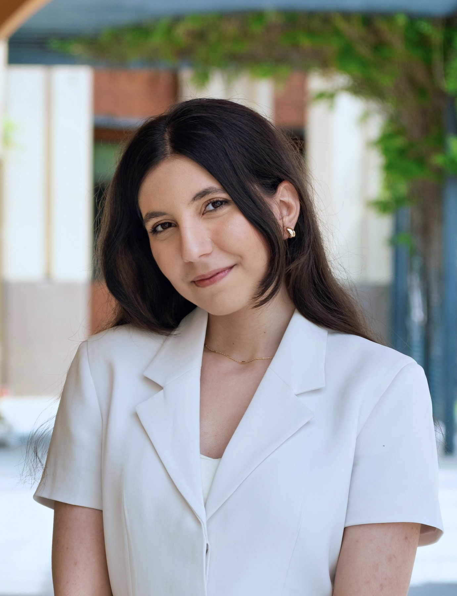

~/Fatemeh Fallahnejad
Hello! I'm an incoming third-year Computer Science transfer student at UC San Diego. I'm interested in computational sciences, machine learning, and building software that makes scientific research easier to use.
This summer, I worked at Vividion Therapeutics as a Data Science and Computational Biology Intern. I built and deployed an RNA-sequencing analytics portal for scientists and worked across its data workflows, backend, user interface, and internal server deployment. I also contributed to machine-learning models using protein language-model representations with the cheminformatics team.
Before transferring, I joined the National Science Foundation Research Experiences for Undergraduates (NSF REU) program in Interdisciplinary Artificial Intelligence at UC San Diego. My project brought together the Department of Computer Science and Engineering and Scripps Institution of Oceanography. With Garrison Cottrell and Jasmin Pyo, I studied generative learning for natural-product structure elucidation, built a reproducible MOSES and RDKit evaluation pipeline, and compared text-, atom-, and motif-based molecular representations.
Through the PASS Summer Research Internship, I studied binary-star systems using observations from Mount Wilson Observatory. I presented the work at the Society for Astronomical Sciences (SAS) Symposium and coauthored the paper “Evaluating the Close-Companion Detection Capability of the Mount Wilson 100-inch Telescope for TESS Subgroup 3 Observations.” I later returned to explore LLM-assisted telescope imaging and automated observation sequencing with N.I.N.A.
I also work as a Student Success Specialist with the SDCCD MESA Program, where I tutor and mentor community-college STEM students, lead workshops, and help students prepare for transfer.
You can reach me by email, or find me on GitHub and LinkedIn.

Publications & presentations
- Generative Learning for Natural Product Structure Elucidation. USC SoCal REU Poster Symposium, 2026. Poster ↗
- Dancing Stars: A Binary Star System Research Project. PASS Summer Research Internship, 2025. Poster ↗
- Evaluating the Close-Companion Detection Capability of the Mount Wilson 100-inch Telescope for TESS Subgroup 3 Observations. Coauthor; astronomy research paper. Presented at the Society for Astronomical Sciences (SAS) Symposium, 2026.
Education
University of California, San Diego
Incoming third-year transfer student, B.S. Computer Science
September 2026-June 2028 (expected)
San Diego Miramar College
Associate degrees in Computer Science, Mathematics Studies, and
Social & Behavioral Sciences · 4.00 GPA · 2026